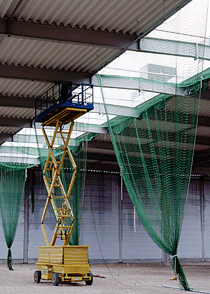

Schutznetze
Schutznetze haben die Funktion, Personen beim Absturz und herabfallende Gegenstände aufzufangen. Schutznetze, die herabfallende Gegenstände auffangen sollen, dürfen eine Maschenweite von höchstens 2 cm besitzen.



Schutznetze haben die Funktion, Personen beim Absturz und herabfallende Gegenstände aufzufangen. Schutznetze, die herabfallende Gegenstände auffangen sollen, dürfen eine Maschenweite von höchstens 2 cm besitzen.